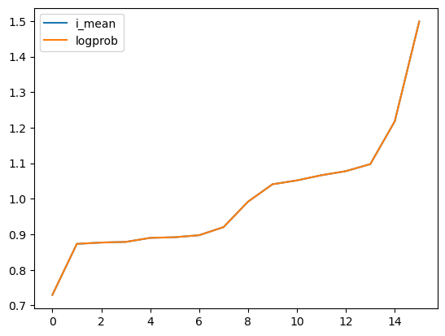
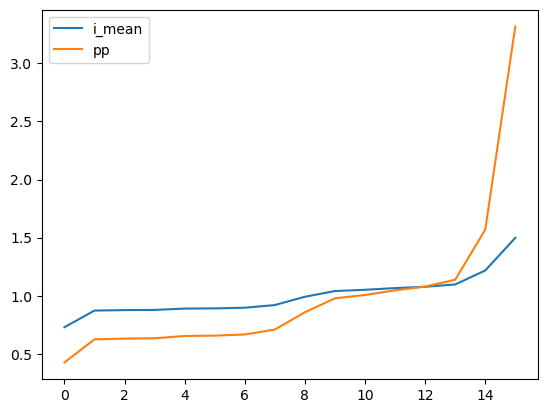
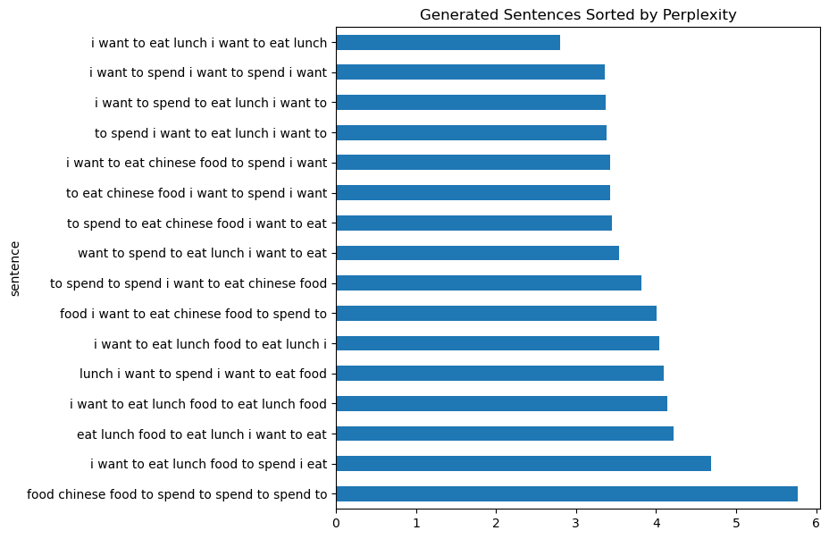
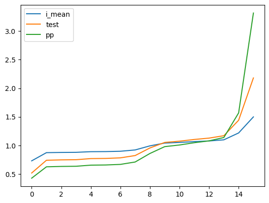

import pandas as pd
import numpy as npDemonstration of Simple Language Model
Course: DS 5001
Module: 03 Lab
Topic: Demonstration of Simple Language Model
Author: R.C. Alvarado
Date: 31 January 2023Purpose: Demonstrates use of simple langauge model based on Berkeley restaurant data (from Jurafsky and Martin).
Set Up
Make the Data
We convert these three tables into Pandas dataframes and use them to predict and generate sentences.

First, we create the table of unigrams and their frrequencies, i.e. the priors or marginals of a bigram model.
Note that this counts are relative to the entire corpus, not just the subset represented in the bigram table. So, we can’t compute the probabilities of the unigrams.
data1 = dict(
w0 = "i want to eat chinese food lunch spend".split(),
n = [2533, 927, 2417, 746, 158, 1093, 341, 278]
)df1 = pd.DataFrame(data1).set_index(['w0'])
df1.n = df1.n.astype('int')Since we will want to use unigram probabilities for our model, we will estimate the number of tokens in the corpus. We will chose \(50000\), based on the data found in The Berkeley Restaurant Project (BeRP) Transcripts. (We sum the counts in the wordhist.txt file and round down, since the data in the repo contain higher word counts for our words.)
C = 50000df1['p'] = df1.n / C
df1['i'] = np.log2(1/df1.p)df1| n | p | i | |
|---|---|---|---|
| w0 | |||
| i | 2533 | 0.05066 | 4.303009 |
| want | 927 | 0.01854 | 5.753215 |
| to | 2417 | 0.04834 | 4.370639 |
| eat | 746 | 0.01492 | 6.066609 |
| chinese | 158 | 0.00316 | 8.305860 |
| food | 1093 | 0.02186 | 5.515563 |
| lunch | 341 | 0.00682 | 7.196013 |
| spend | 278 | 0.00556 | 7.490699 |
Next, we create a table joint probabilities that will be the basis for our bigram model.
data2 = [row.split(", ") for row in """
i, i, 5
i, want, 837
i, eat, 9
i, spend, 2
want, i, 2
want, to, 608
want, eat, 1
want, chinese, 6
want, food, 6
want, lunch, 5
want, spend, 1
to, i, 2
to, to, 4
to, eat, 686
to, chinese, 2
to, lunch, 6
to, spend, 211
eat, to, 2
eat, chinese, 16
eat, food, 2
eat, lunch, 42
chinese, i, 1
chinese, food, 82
chinese, lunch, 1
food, i, 15
food, to, 15
food, chinese, 1
food, food, 4
lunch, i, 2
lunch, food, 1
spend, i, 1
spend, to, 1
""".split("\n")[1:-1]]df2 = pd.DataFrame(data2, columns = ['w0', 'w1', 'n']).set_index(['w0','w1'])
df2.n = df2.n.astype('int')df2.sort_values('n', ascending=False)| n | ||
|---|---|---|
| w0 | w1 | |
| i | want | 837 |
| to | eat | 686 |
| want | to | 608 |
| to | spend | 211 |
| chinese | food | 82 |
| eat | lunch | 42 |
| chinese | 16 | |
| food | to | 15 |
| i | 15 | |
| i | eat | 9 |
| want | chinese | 6 |
| food | 6 | |
| to | lunch | 6 |
| i | i | 5 |
| want | lunch | 5 |
| food | food | 4 |
| to | to | 4 |
| chinese | 2 | |
| i | 2 | |
| eat | to | 2 |
| food | 2 | |
| lunch | i | 2 |
| want | i | 2 |
| i | spend | 2 |
| spend | i | 1 |
| lunch | food | 1 |
| chinese | lunch | 1 |
| food | chinese | 1 |
| want | eat | 1 |
| chinese | i | 1 |
| want | spend | 1 |
| spend | to | 1 |
Next, we compute conditional probabilities \(p\) with the formula \(p(B|A) = \large \frac{P(A,B)}{P(A)}\) converted to \(\large \frac{C(A,B)}{C(A)}\).
We also compute the information \(i\) for each \(p\). This will allow use to compute perplexity \(pp\) easily.
Note that information \(i\) is just the negative of the log probability of the event, so we can use this to compute the log probability of sentences later.
df2['p'] = df2.n / df1.n
df2['i'] = np.log2(1/df2.p)df2.sort_values('p', ascending=False).style.background_gradient(cmap='YlGnBu')| n | p | i | ||
|---|---|---|---|---|
| w0 | w1 | |||
| want | to | 608 | 0.655879 | 0.608498 |
| chinese | food | 82 | 0.518987 | 0.946229 |
| i | want | 837 | 0.330438 | 1.597548 |
| to | eat | 686 | 0.283823 | 1.816937 |
| spend | 211 | 0.087298 | 3.517903 | |
| eat | lunch | 42 | 0.056300 | 4.150714 |
| chinese | 16 | 0.021448 | 5.543032 | |
| food | to | 15 | 0.013724 | 6.187187 |
| i | 15 | 0.013724 | 6.187187 | |
| want | chinese | 6 | 0.006472 | 7.271463 |
| food | 6 | 0.006472 | 7.271463 | |
| chinese | lunch | 1 | 0.006329 | 7.303781 |
| i | 1 | 0.006329 | 7.303781 | |
| lunch | i | 2 | 0.005865 | 7.413628 |
| want | lunch | 5 | 0.005394 | 7.534497 |
| food | food | 4 | 0.003660 | 8.094078 |
| spend | i | 1 | 0.003597 | 8.118941 |
| to | 1 | 0.003597 | 8.118941 | |
| i | eat | 9 | 0.003553 | 8.136706 |
| lunch | food | 1 | 0.002933 | 8.413628 |
| eat | to | 2 | 0.002681 | 8.543032 |
| food | 2 | 0.002681 | 8.543032 | |
| to | lunch | 6 | 0.002482 | 8.654039 |
| want | i | 2 | 0.002157 | 8.856426 |
| i | i | 5 | 0.001974 | 8.984703 |
| to | to | 4 | 0.001655 | 9.239002 |
| want | spend | 1 | 0.001079 | 9.856426 |
| eat | 1 | 0.001079 | 9.856426 | |
| food | chinese | 1 | 0.000915 | 10.094078 |
| to | chinese | 2 | 0.000827 | 10.239002 |
| i | 2 | 0.000827 | 10.239002 | |
| i | spend | 2 | 0.000790 | 10.306631 |
We convert a selection from the narrow table into a wide one, projecting the second index feature w1 onto the second axis.
This is strictly not necessary, but it is convenient for certain computations and it is visually appealing.
df3 = df2.p.unstack(fill_value=0)df3.style.background_gradient(cmap='YlGnBu', axis=None)| w1 | chinese | eat | food | i | lunch | spend | to | want |
|---|---|---|---|---|---|---|---|---|
| w0 | ||||||||
| chinese | 0.000000 | 0.000000 | 0.518987 | 0.006329 | 0.006329 | 0.000000 | 0.000000 | 0.000000 |
| eat | 0.021448 | 0.000000 | 0.002681 | 0.000000 | 0.056300 | 0.000000 | 0.002681 | 0.000000 |
| food | 0.000915 | 0.000000 | 0.003660 | 0.013724 | 0.000000 | 0.000000 | 0.013724 | 0.000000 |
| i | 0.000000 | 0.003553 | 0.000000 | 0.001974 | 0.000000 | 0.000790 | 0.000000 | 0.330438 |
| lunch | 0.000000 | 0.000000 | 0.002933 | 0.005865 | 0.000000 | 0.000000 | 0.000000 | 0.000000 |
| spend | 0.000000 | 0.000000 | 0.000000 | 0.003597 | 0.000000 | 0.000000 | 0.003597 | 0.000000 |
| to | 0.000827 | 0.283823 | 0.000000 | 0.000827 | 0.002482 | 0.087298 | 0.001655 | 0.000000 |
| want | 0.006472 | 0.001079 | 0.006472 | 0.002157 | 0.005394 | 0.001079 | 0.655879 | 0.000000 |
Apply the Model
Now we generate sentences from the model and also compute their probabilities and perplexities.
We also demonstrate the relationship between sum of log probability, mean information, and perplexity.
N = 20
M = 10
results = []
# Generate N sentences
for i in range(N):
# Get a start word from the unigram list (since we don't have sentence boundaries in our bigram model
start = df1.sample(weights='n')
w0 = start.index[0]
i = start.i.values[0] # This is why we needed to estimate the number of tokens in the corpus C
# Initialize sentence feature lists
W = [w0]
I = [i]
LP = [-i]
# Select M words for each sentence
for j in range(M - 1):
w1 = df3.loc[w0].sample(weights=df3.loc[w0].values).index[0]
i = df2.loc[(w0, w1), 'i']
W.append(w1)
I.append(i)
LP.append(-i)
w0 = w1
# Compute sentence stats
S = pd.DataFrame(dict(w=W, i=I, lp=LP)) # This is expensive; we'd do it differently at scale
i_mean = S.i.mean()
lp_sum = S.lp.sum()
pp = 2**(i_mean)
sent_str = ' '.join(W)
# Append to results
results.append((sent_str, lp_sum, i_mean, pp))
# Put results in a dataframe
R = pd.DataFrame(results, columns=['sentence', 'logprob', 'i_mean', 'pp'])
# Keep only unique sentences, i.e. treat sentences as index values
sentence_counts = R.sentence.value_counts().to_frame('n')
R = R.drop_duplicates()
R = R.reset_index(drop=True).set_index('sentence')
R['n'] = sentence_counts
# Display results
R.sort_values('i_mean', ascending=True).style.background_gradient(cmap="YlGnBu")| logprob | i_mean | pp | n | |
|---|---|---|---|---|
| sentence | ||||
| i want to eat lunch i want to eat lunch | -28.064031 | 2.806403 | 6.995383 | 3 |
| i want to spend i want to spend i want | -33.586335 | 3.358634 | 10.257687 | 1 |
| i want to spend to eat lunch i want to | -33.733223 | 3.373322 | 10.362659 | 1 |
| to spend i want to eat lunch i want to | -33.800853 | 3.380085 | 10.411350 | 2 |
| i want to eat chinese food to spend i want | -34.236831 | 3.423683 | 10.730780 | 2 |
| to eat chinese food i want to spend i want | -34.304460 | 3.430446 | 10.781201 | 1 |
| to spend to eat chinese food i want to eat | -34.523850 | 3.452385 | 10.946403 | 1 |
| want to spend to eat lunch i want to eat | -35.402818 | 3.540282 | 11.634053 | 1 |
| to spend to spend i want to eat chinese food | -38.156569 | 3.815657 | 14.080795 | 1 |
| food i want to eat chinese food to spend to | -40.039024 | 4.003902 | 16.043337 | 1 |
| i want to eat lunch food to eat lunch i | -40.458800 | 4.045880 | 16.517003 | 1 |
| lunch i want to spend i want to eat food | -41.018544 | 4.101854 | 17.170432 | 1 |
| i want to eat lunch food to eat lunch food | -41.458800 | 4.145880 | 17.702486 | 1 |
| eat lunch food to eat lunch i want to eat | -42.222400 | 4.222240 | 18.664695 | 1 |
| i want to eat lunch food to spend i eat | -46.851071 | 4.685107 | 25.725142 | 1 |
| food chinese food to spend to spend to spend to | -57.653587 | 5.765359 | 54.393363 | 1 |
Interpet Results
Compare mean i to the sum of log p. Notice they are identical when normalized by mean.
(R / R.mean()).sort_values('i_mean')[['i_mean','logprob']].reset_index().plot();
Compre perplexity pp to mean information i. Notice how perplexity amplifies the difference.
(R / R.mean()).sort_values('i_mean')[['i_mean','pp']].reset_index().plot();
So, we will use perplexity to measure of how well a model performs.
R.reset_index().set_index('sentence').sort_values('pp').i_mean.sort_values(ascending=False)\
.plot.barh(figsize=(7,7), title="Generated Sentences Sorted by Perplexity");
Since perplexity looks something like squaring the error of our model (where mean information is interpreted as error), let’s create a test feature that just squares mean information and compare to the other features.
R['test'] = R.i_mean**2(R / R.mean()).sort_values('i_mean')[['i_mean', 'test','pp']].reset_index().plot();